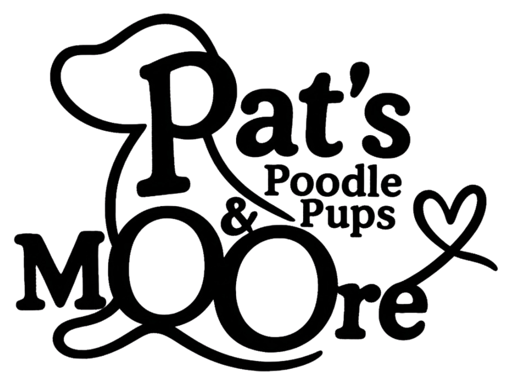
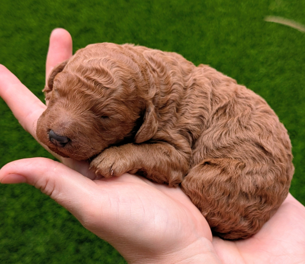
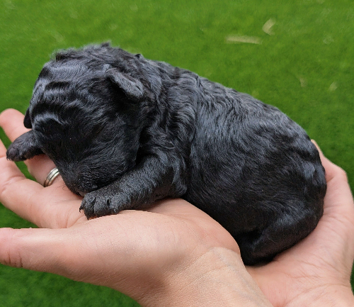
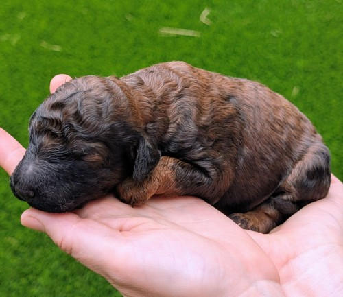
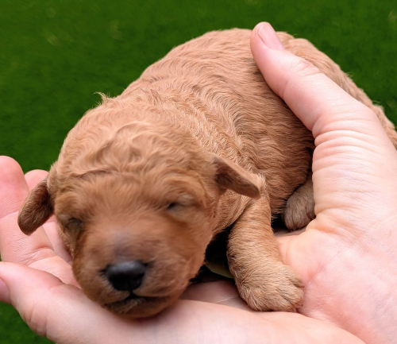

Chunkey Monkey is our heaviest little puppy at birth, hence his name! He seems to always be happy to nurse and is always quiet. His coat is so shiny and intense red. He melts in your arms to snuggle and weighs 15.6 OZ

Cherry Garcia, our vibrant black female puppy. Despite being the runt of the litter, she has shown that she has more energy than any of her littermates. While I know genetics heavily shape a dog's temperament, she is already showing all the classic signs of a typical runt—sweet, feisty, and incredibly loyal. She has also earned the nickname "opera singer" from my six-year-old, Keith, because of the adorable little noises she makes while nursing. She is truly stunning in person, though she has been a bit difficult to photograph as pictures simply don't do her beauty justice. On the genetics front, her swabs are currently being processed through Embark to see if she carries the little "e" gene for a brown coat. If she does, she might just be our little unicorn female who will be able to produce multiple different coat colors.

Rockey Road was the first one born in his litter and is so laid back. He’s frequently found on his back sleeping and relaxing. He’s never made a peep and is so soft and majestic colored. We need time to be sure, but I believe he is a wild sable or a black dog expressing sable. We need a few more weeks of growing coat to see. Rockey road has surpassed his litter mate and is now the heaviest pup that weighs 16.8 OZ

Cookie Dough is our biggest female. She has a cream coat and is the lightest in color amongst her litter mates. She is spunkey and always finds her nipple first.